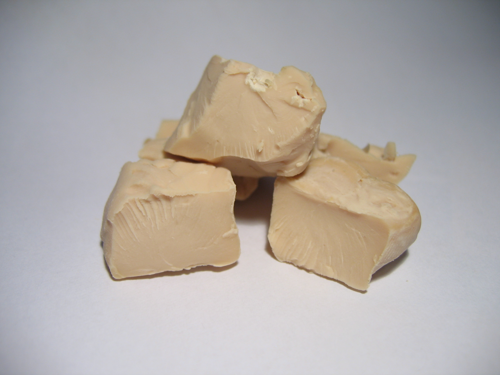

A query language for your API
How to Bake Bread

Is this recipe sufficient to bake bread?
What is missing?
Ingredients
- Water - 2 1/4 cups
- Sugar - 3 Tbsp
- Salt - 1 Tbsp
- Oil - 2 Tbsp
- Flour - 6 1/2 cups
- Yeast - 1 Package (1/4 oz.)
Directions
- In a large bowl, dissolve yeast in warm water. Add the sugar, salt, oil and 3 cups flour. Beat until smooth. Stir in enough remaining flour, 1/2 cup at a time, to form a soft dough.
- Turn onto a floured surface; knead until smooth and elastic, about 8-10 minutes. Place in a greased bowl, turning once to grease the top. Cover and let rise in a warm place until doubled, about 1-1/2 hours.
- Punch dough down. Turn onto a lightly floured surface; divide dough in half. Shape each into a loaf. Place in two greased 9x5-in. loaf pans. Cover and let rise until doubled, about 30-45 minutes.
- Bake at 375° for 30-35 minutes or until golden brown and bread sounds hollow when tapped. Remove from pans to wire racks to cool. Yield: 2 loaves (16 slices each).
But how does this relate to GraphQL?
REST Get my Profile
curl -v -H "Authorization: Bearer <access-token>" \
-H "concur-correlationid: what-is-graphql-1" \
"https://user.concurasp.com/profile-service/v1/me"
{
"addresses": [
{
"type": "Home",
"streetAddress": "123 456th Ave NE",
"locality": "Seattle",
"region": "WA",
"postalCode": "98000",
"country": "US"
},
{
"type": "Work",
"streetAddress": "123 456th Ave NE",
"locality": "Seattle",
"region": "WA",
"postalCode": "98000",
"country": "US"
}
],
"com:concur:internal:product:Identifiers:1.0": {
"cteUsername": "Aaron.XXXXXXX@XXXXXX.com",
"expenseIds": {
"guuid": "8000000070055855647",
"entityId": "p00789z1gu"
},
"travelIds": {
"userId": 77294238,
"companyId": "f3d4d5e3-44e9-4f04-8d5e-3fd60eaf4e82",
"companyInternalId": 1,
"setId": 82421427,
"ruleClassId": 5800,
"travelConfigId": "5288"
}
},
"meta": {
"created": "2015-11-25T01:05:00.000",
"lastModified": "2017-01-16T22:48:00.000",
"principalType": "user",
"resourceType": "EnterpriseUser"
},
"displayName": "Aaron",
"name": {
"formatted": "Weiker, Aaron",
"familyName": "Weiker",
"givenName": "Aaron",
"honorificPrefix": "",
"honorificSuffix": ""
},
"phoneNumbers": [
{
"type": "Home",
"primary": false,
"notifications": false,
"countryCode": "US",
"countryISDCode": "1"
},
{
"type": "Work",
"primary": false,
"notifications": false,
"countryCode": "US",
"countryISDCode": "1"
},
{
"type": "Cell",
"primary": true,
"notifications": false,
"countryCode": "US",
"countryISDCode": "1"
}
],
"com:concur:Employee:1.0": {
"companyUUID": "f3d4d5e3-44e9-4f04-8d5e-3fd60eaf4e82",
"companyInternalId": 1,
"employeeId": "123456789",
"jobTitle": "B1282-M - MANAGER DEVELOPMENT",
"managerId": "0d93d3bc-d52f-4a17-bcee-d83a270bce87",
"orgUnitId": null
},
"dateOfBirth": "1940-01-01",
"schemas": [
"com:concur:User:1.0",
"com:concur:internal:product:Identifiers:1.0",
"com:concur:Employee:1.0",
"com:concur:TravelPreferences:1.0",
"com:concur:Programs:1.0",
"com:concur:Documents:1.0",
"com:concur:internal:Roles:1.0"
],
"active": true,
"id": "3233c241-a96f-4c69-b504-2055b267abc5",
"com:concur:TravelPreferences:1.0": {
"air": {
"seat": {
"interrowPosition": "Aisle",
"sectionPosition": "Forward"
},
"meal": "DontCare",
"homeAirport": "SEA"
},
"rail": {
"space": "DontCare",
"meal": "DontCare",
"bedCategory": "DontCare",
"fareSpaceComfort": "DontCare",
"deck": "DontCare",
"coach": "CoachWithTable",
"bed": "DontCare",
"berth": "DontCare",
"noiseComfort": "QuietSpace",
"contingency": "DontCare",
"seat": "Aisle"
},
"car": {
"smoking": "NonSmoking",
"carType": "DontCare",
"transmission": "DontCare",
"gpsEnabled": false,
"skirack": false
},
"hotel": {
"earlyCheckin": false,
"remark": null,
"pool": false,
"roomService": false,
"foamPillows": false,
"accessForBlind": false,
"accessForWheelchair": false,
"gym": true,
"roomType": "King",
"restaurant": false,
"rollawayBed": false,
"smoking": "NonSmoking",
"crib": false
}
},
"com:concur:Programs:1.0": {
"car": [],
"air": [
{
"default": false,
"pointsNext": null,
"expiration": null,
"nextStatus": null,
"points": null,
"segments": null,
"vendorName": "Alaska Airlines",
"account": "123456789",
"statusBenefits": null,
"status": null,
"segmentsNext": null,
"vendorCode": "AS"
}
],
"rail": [],
"hotel": [
{
"default": false,
"pointsNext": null,
"expiration": null,
"nextStatus": null,
"points": null,
"segments": null,
"vendorName": "Starwood (All)",
"account": "123456789",
"statusBenefits": null,
"status": null,
"segmentsNext": null,
"vendorCode": "SW"
}
]
},
"gender": "Male",
"emails": [
{
"value": "aaron.xxxxx@XXXXXXXX.com",
"type": "Business",
"notifications": true
},
{
"value": "aaron@xxxxxxx.org",
"type": "Personal",
"notifications": false
}
],
"com:concur:Documents:1.0": {
"visa": [],
"passport": []
},
"com:concur:internal:Roles:1.0": {
"com.concur.travel": [
"cesuser",
"cvpuser",
"guestbooking",
"meetingcenteruser",
"openbookinguser",
"traveluser"
]
},
"userType": "Enterprise"
}
GraphQL Profile
query profile {
user {
profile {
personal {
name {
first
last
}
}
company {
name
}
}
}
}
{
"data": {
"user": {
"profile": {
"personal": {
"name": {
"last": "Weiker",
"first": "Aaron"
}
},
"company": {
"name": "Concur Technology"
}
}
}
}
}


Practice
type animal {
name: String
legs: Integer
covering: CoveringEnum
}
enum CoveringEnum {
HAIR
FEATHERS
FUR
SCALES
}
query cuteAnimals {
animals {
name
legs
covering
}
}
{
"data": {
"animals": [
{ "name": "Caribou", "legs": 4, "covering": "FUR" },
{ "name": "Dog", "legs": 4, "covering": "FUR" },
{ "name": "Frog", "legs": 4, "covering": "SCALES" },
{ "name": "Cat", "legs": 4, "covering": "FUR" },
{ "name": "Lama", "legs": 4, "covering": "FUR" },
{ "name": "Pelican", "legs": 2, "covering": "FEATHERS" },
{ "name": "Quokka", "legs": 4, "covering": "FUR" },
{ "name": "Snail", "legs": nil, "covering": nil }
]
}
}
Congratulations